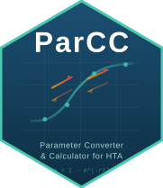

Parameterizing Distributions for PSA
Source:vignettes/psa-distributions.Rmd
psa-distributions.RmdWhy PSA Needs the Right Distribution
Probabilistic Sensitivity Analysis (PSA) requires sampling model parameters from appropriate distributions. Using the wrong distribution can produce impossible values (e.g., probabilities > 1 or negative costs) and bias the results.
| Parameter Type | Recommended Distribution | Reason |
|---|---|---|
| Probabilities / Utilities | Beta | Bounded between 0 and 1 |
| Costs / Resource Use | Gamma | Non-negative, right-skewed |
| Hazard Ratios / Odds Ratios | LogNormal | Non-negative, multiplicative |
Tutorial 1: Utilities with Beta Distribution
The Scenario – EQ-5D Utility in COPD
A quality-of-life study in COPD (Rutten-van Molken et al., Chest 2006) reports the EQ-5D utility for “Moderate COPD (GOLD Stage II)” as:
Mean = 0.76, Standard Error = 0.03
Worked Example
mu <- 0.76
se <- 0.03
common <- (mu * (1 - mu)) / se^2 - 1
alpha <- mu * common
beta_param <- (1 - mu) * common
cat("Alpha:", round(alpha, 2), "\n")
#> Alpha: 153.27
cat("Beta:", round(beta_param, 2), "\n")
#> Beta: 48.4
# Verify: sample and check
set.seed(42)
samples <- rbeta(10000, alpha, beta_param)
cat("\nVerification (10,000 samples):\n")
#>
#> Verification (10,000 samples):
cat("Mean:", round(mean(samples), 4), "(target:", mu, ")\n")
#> Mean: 0.7601 (target: 0.76 )
cat("SE:", round(sd(samples), 4), "(target:", se, ")\n")
#> SE: 0.0303 (target: 0.03 )
cat("Range:", round(range(samples), 4), "\n")
#> Range: 0.6379 0.86All values are bounded between 0 and 1, as required for utilities.
Tutorial 2: Costs with Gamma Distribution
The Scenario – Surgery Cost (AIIMS Costing Study)
A micro-costing study reports the cost of CABG surgery as:
Mean = INR 2,50,000, Standard Error = INR 50,000
Worked Example
mu_cost <- 250000
se_cost <- 50000
k <- mu_cost^2 / se_cost^2
theta <- se_cost^2 / mu_cost
cat("Shape (k):", round(k, 2), "\n")
#> Shape (k): 25
cat("Scale (theta):", round(theta, 2), "\n")
#> Scale (theta): 10000
# Verify
set.seed(42)
samples_cost <- rgamma(10000, shape = k, scale = theta)
cat("\nVerification (10,000 samples):\n")
#>
#> Verification (10,000 samples):
cat("Mean: INR", format(round(mean(samples_cost)), big.mark = ","), "(target:", format(mu_cost, big.mark = ","), ")\n")
#> Mean: INR 249,971 (target: 250,000 )
cat("SE: INR", format(round(sd(samples_cost)), big.mark = ","), "(target:", format(se_cost, big.mark = ","), ")\n")
#> SE: INR 50,462 (target: 50,000 )
cat("Min: INR", format(round(min(samples_cost)), big.mark = ","), "(always positive)\n")
#> Min: INR 90,175 (always positive)Tutorial 3: Hazard Ratios with LogNormal Distribution
The Scenario – HR from Network Meta-Analysis
A network meta-analysis reports the HR for Drug A vs placebo as:
HR = 0.72, 95% CI: 0.58 to 0.89
The Method
hr_mean <- 0.72
hr_low <- 0.58
hr_high <- 0.89
mu_log <- log(hr_mean)
se_log <- (log(hr_high) - log(hr_low)) / (2 * 1.96)
sigma2_log <- se_log^2
cat("mu_log:", round(mu_log, 4), "\n")
#> mu_log: -0.3285
cat("sigma_log:", round(se_log, 4), "\n")
#> sigma_log: 0.1092
# Verify
set.seed(42)
samples_hr <- rlnorm(10000, meanlog = mu_log, sdlog = se_log)
cat("\nVerification (10,000 samples):\n")
#>
#> Verification (10,000 samples):
cat("Median HR:", round(median(samples_hr), 3), "(target:", hr_mean, ")\n")
#> Median HR: 0.72 (target: 0.72 )
cat("2.5th percentile:", round(quantile(samples_hr, 0.025), 3), "(target:", hr_low, ")\n")
#> 2.5th percentile: 0.58 (target: 0.58 )
cat("97.5th percentile:", round(quantile(samples_hr, 0.975), 3), "(target:", hr_high, ")\n")
#> 97.5th percentile: 0.892 (target: 0.89 )